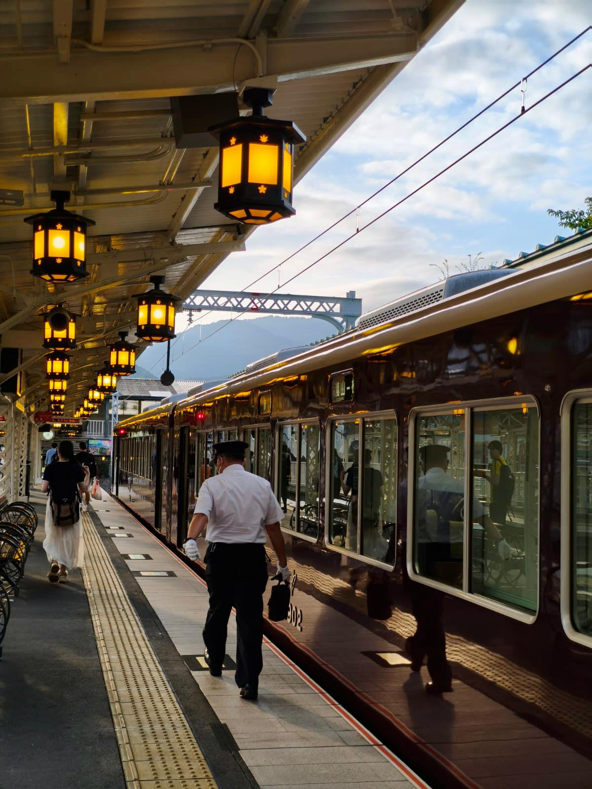

ARNAU
ARNAURUIZ ROCA
1 1番線 · アルナウ線
山頂 03 · 日本
日本での暮らしを、一駅ずつ。
慣れ親しんだ場所を離れ、別の場所で暮らすことを学びました。違う言葉、仕事、新しい人たち、そして違うやり方。この6つの駅で、自分の居場所を見つけていった過程をお伝えします。
路線図から駅を選ぶか、矢印に沿って進んでください。
ただいま{{cur.es}} ●
つぎは{{nextEs}}
路線日本での経験
黄色い線の内側でお待ちください
ARNAU1 1番線 · アルナウ線
山頂 03 · 日本
慣れ親しんだ場所を離れ、別の場所で暮らすことを学びました。違う言葉、仕事、新しい人たち、そして違うやり方。この6つの駅で、自分の居場所を見つけていった過程をお伝えします。
路線図から駅を選ぶか、矢印に沿って進んでください。

{{cur.kana}}
{{cur.kanji}}{{cur.romaji}}· {{cur.es}}
黄色い線の内側でお待ちください